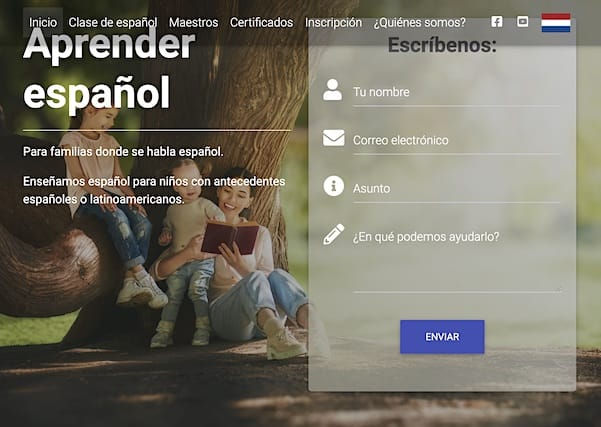

<div class="port-holder">
	<div class="row">
		<!-- Project Close Button -->
		<div class="col-md-12">	
			<ul class="pclose">
				<li>
					<a id="portfolio-close" href="#" title="Close Project">
						<i class="fa fa-times-circle-o"></i>
					</a>
				</li>
			</ul>	          	
		</div>
		<!--/Project Close Button -->
		<!-- Project Title -->
			<div class="project-title">	
				<h1>Stichting Punto de Encuento</h1>
				<p>Pro Deo / Maatschappelijk nut</p>
			</div>
		<!-- /Project Title end-->

		<!-- Project slider -->
			<div class="row">
				<div></div>
			</div>
		<!-- /Project slider -->		
		<div class="col-md-12">
			<div class="portfolio-media">
	              <div id="project-carousel" class="owl-carousel owl-theme">
                      <div class="item"><a href="https://www.puntodeencuentro.nl" target="_blank"></a></div>
	              </div>
			</div>
		</div>
		<!-- /Project slider end-->

		<!-- Project Details -->
			<div class="col-md-12">
				<h2>STICHTING PUNTO DE ENCUENTRO</h2>
				<p>Mijn manier om bij te dragen aan de maatschappij, is door mijn kennis en kunde "om niet" in te zetten. In dit geval gaat het om een stichting die de spaanse taal onderricht aan kinderen of kleinkinderen van Latijnsamerikaanse immigranten en een beetje cultuur meegeeft. Taal en cultuur zijn twee zaken die dreigen te verwateren in een ander land. Ik heb hun website geleverd. </p>
			</div>
		<!-- /Project Details end -->
	</div>
</div>